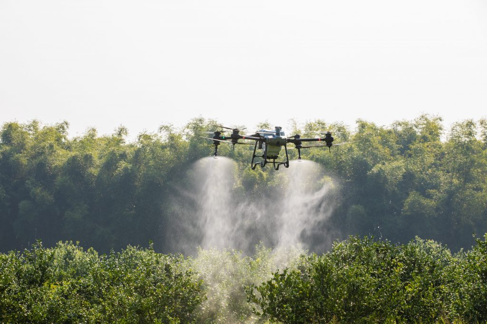
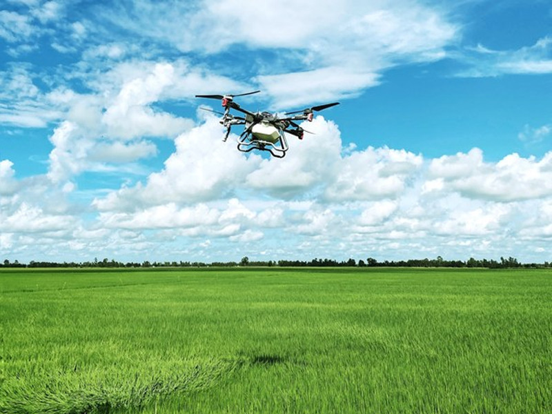
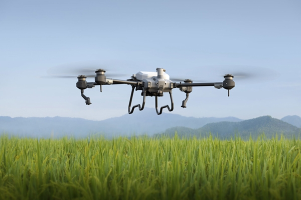
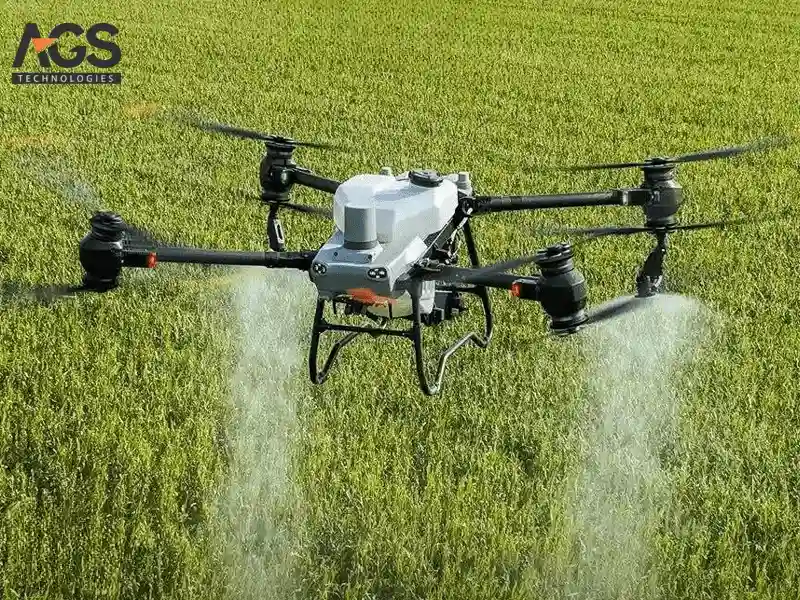
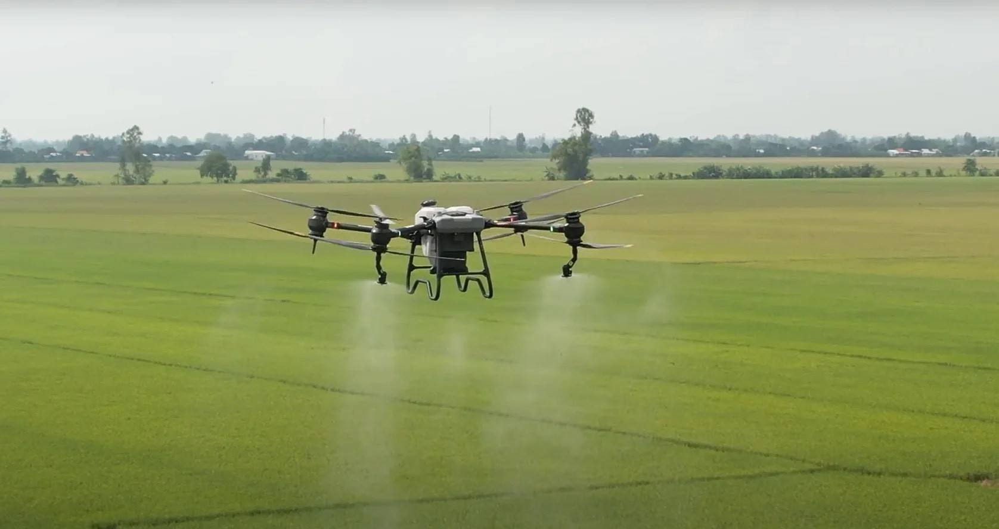
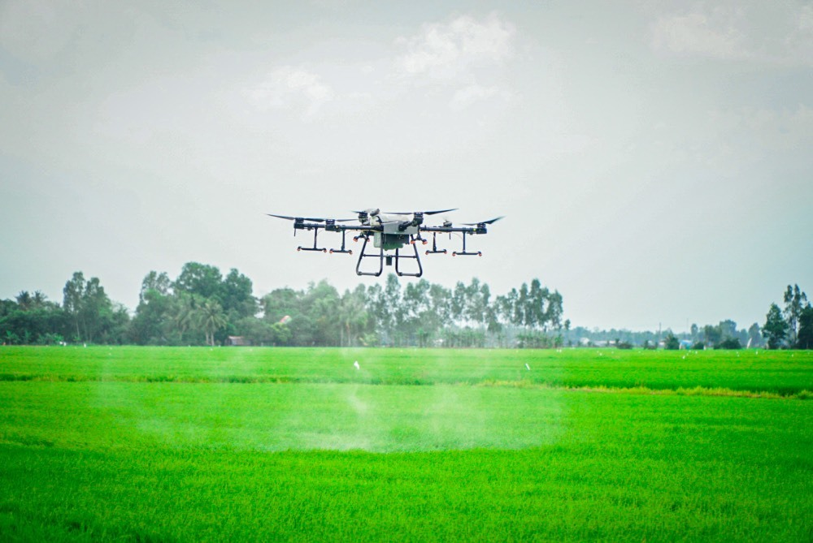
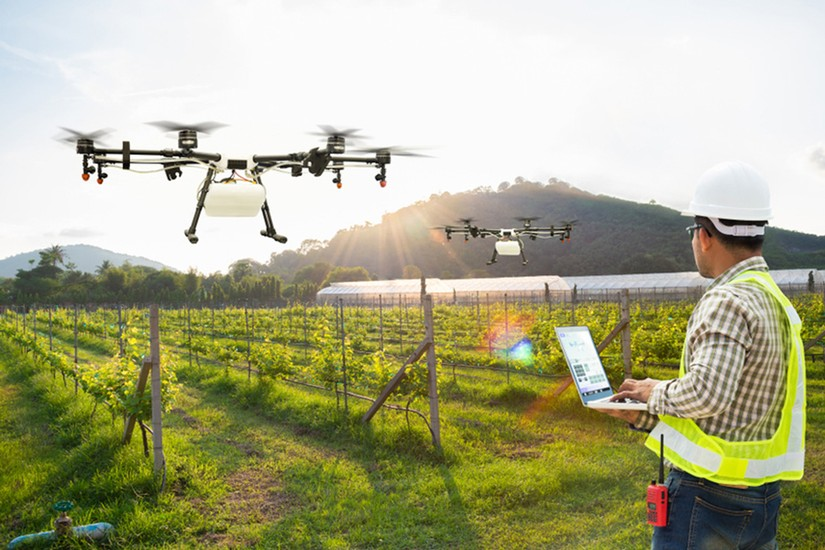
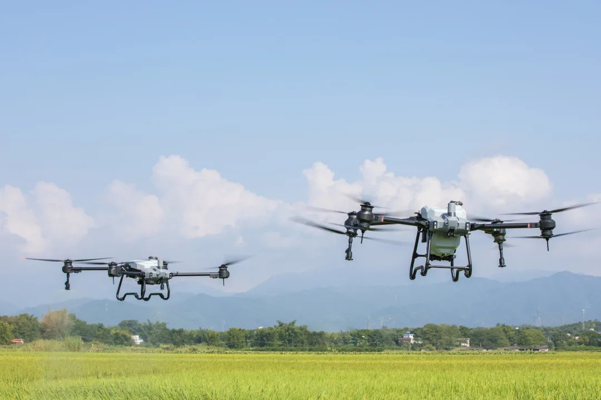

1.Máy bay phun thuốc trừ sâu là gì ?
Máy bay phun thuốc trừ sâu là tên gọi của một thiết bị trong nông nghiệp. Nó còn có nhiều tên gọi khác như
Drone phun thuốc, Flycam xịt thuốc, máy bay xịt lúa, máy bay nông nghiệp, máy bay phun thuốc trừ sâu Trung
Quốc… Đây thực chất là thiết bị máy bay xịt thuốc không người lái, mục đích là để phục vụ cho việc phun
thuốc trong nông nghiệp.

Máy bay xịt thuốc lúa sẽ giúp phun thuốc trừ sâu chính xác và hiệu quả hơn. Từ đó, hỗ trợ cho việc tiết kiệm
chi phí, thời gian và nhân công lao động hơn so với phương pháp phun thủ công.
Bên cạnh việc phun thuốc, loại máy bay này còn có thể giúp người nông dân làm thật tốt các công việc khác
như bón phân, gieo sạ, phòng và diệt trừ sâu bệnh hại, vì vậy nó còn được biết đến với tên gọi máy bay sạ
lúa. Nhờ vào những chức năng đó, cây trồng sẽ tăng trưởng vượt trội với siêu năng suất, đồng thời tăng giá
trị nông sản, đột phá doanh thu cho bà con.
Hiện nay, trên thị trường đang cung cấp 2 dòng máy bay phun thuốc, đó là:
- Máy bay vòi phun công nghệ ly tâm: có vòi phun siêu mịn, mượt cho phép phun thuốc bảo vệ thực vật ở
dạng sương mù. Thuốc thấm đồng đều, tiết kiệm thuốc. Đặc biệt, công nghệ ly tâm không kén thuốc khi
phun, phun được tất cả các loại thuốc nước, huyền nhũ, bột, nhũ dầu…
- Máy bay vòi phun công nghệ áp lực: chỉ phun được thuốc nước và có đặc điểm là chảy thành tia khi phun.
2.Cấu tạo chung của máy bay xịt thuốc
Drone nông nghiệp là thiết bị máy bay được cấu tạo từ các bộ phận sau:
- Bộ động cơ
- Cánh quạt. Tùy thuộc vào mục đích sử dụng, được chia thành 2 loại chính theo kết cấu của cánh, đó là
cánh quạt và cánh cố định.
- Vi xử lý trung tâm
- Giá đỡ
- Nguồn cung cấp năng lượng (Pin).
3. Ưu nhược điểm của máy bay nông nghiệp là gì ?
Việc sử dụng máy bay trong sản xuất nông nghiệp sẽ mang lại rất nhiều lợi ích cho bà con nông dân. Và dòng
thiết bị này cũng sẽ sở hữu nhiều ưu nhược điểm khác nhau.

3.1 Ưu điểm của máy bay nông nghiệp
Không phải ngẫu nhiên mà ngày nay máy bay phun thuốc trừ sâu đã được triển khai ở nhiều quốc gia trên thế
giới. Lý do là bởi sản phẩm sở hữu nhiều ưu điểm như:
kiệm thời gian, chi phí và nhân công
Với sự hình thành và phát triển mạnh mẽ của các khu công nghiệp thì việc thuê nhân công phục vụ cho ngành
nông nghiệp, nhất là phun thuốc trừ sâu cực kỳ khó khăn, chi phí cao. Thế nhưng, sự xuất hiện của máy bay
nông nghiệp đã giải quyết bài toán nhân công một cách dễ dàng.
Chỉ cần một người điều khiển máy bay xịt thuốc lúa, một người pha thuốc thì sẽ tương đương với khoảng 30 nhân
công phun thuốc thủ công bằng tay. Diện tích phun có thể lên tới hơn 50 hecta một ngày, năng suất cao gấp
nhiều lần so với phương thức truyền thống.
Bên cạnh đó, chỉ với một vài thao tác trên điện thoại di động, máy bay điều khiển từ xa phun thuốc trừ sâu sẽ
tự bay đi để thực hiện công việc phun thuốc theo bản đồ đã được lập sẵn. Sau khi hết thuốc, máy sẽ tự động
bay về bãi đáp, công suất lên tới 7 hecta/ 10 phút vô cùng nhanh chóng.
Không chỉ tiết kiệm thời gian, chi phí thuê nhân công mà máy phun thuốc trừ sâu điều khiển từ xa còn tối ưu
rất tốt chi phí nguyên vật liệu đầu vào như nước, phân bón, hạt giống, thuốc bảo vệ thực vật… Theo tính
toán, sử dụng máy bay sẽ tiết kiệm được 15 -20% lượng thuốc bảo vệ thực vật, giảm được 95% lượng nước.

Hiệu quả diệt trừ sâu bệnh cao
Máy bay phun thuốc trừ sâu Trung Quốc thế hệ mới sử dụng công nghệ phun ly tâm giúp cắt nhỏ hạt dung dịch thành 60-400 µm. Với kích thước nhỏ, dạng sương mù nên hạt thuốc có thể bám chặt vào thân và 2 mặt trên dưới của lá cây trồng. Từ đó, thuốc dễ dàng len lỏi vào các bộ phận cũng như thẩm thấu đều, dễ dàng tiêu diệt các loại sâu bệnh trên cây trồng.
Không gây ô nhiễm môi trường và ảnh hưởng đến sức khỏe
Nhờ khả năng bám dính tốt của hạt thuốc nên sẽ không bị rơi xuống đất nhiều. Vì thế, sẽ không làm ảnh hưởng tới những sinh vật có lợi như giun đất… đồng thời cũng không gây ô nhiễm môi trường đất và nước.
Nếu như trước kia, người nông dân phải đeo trên vai bình thuốc nặng đến 40kg và lội xuống ruộng để xịt thuốc sâu, gây tốn nhiều sức lực, vất vả lại còn hít phải các hóa chất độc hại thì ngày nay, việc phun thuốc bằng máy bay đã giúp giảm bớt đi rất nhiều gánh nặng cho người lao động.
Chỉ cần đứng trên bờ, điều khiển từ xa với máy bay phun thuốc, máy sẽ tự động bay đến những điểm đã cài đặt sẵn và phun thuốc đồng đều cho cây trồng. Người nông dân không phải tiếp xúc trực tiếp với thuốc trừ sâu, không bị ảnh hưởng tới sức khỏe với những vấn đề như ngộ độc hoặc mắc các bệnh nguy hiểm sau này…

Có nhiều chức năng tiện lợi
Không chỉ có chức năng phun thuốc trừ sâu, nhiều loại máy bay nông nghiệp đời mới hiện nay còn có thể gieo hạt, rải phân bón một cách cực kỳ thông minh, hiệu quả.
Cụ thể, một máy có thể có đầy đủ 3 bình chứa với chức năng khác nhau là bình chứa phân bón, bình chứa dung dịch thuốc sâu và bình chứa hạt giống. Việc thay thế các bình chứa cũng vô cùng đơn giản, nhanh chóng. Chỉ mất 1-2 phút là có thể vận hành máy tiếp tục thực hiện công việc.
3.2. Nhược điểm của máy bay phun thuốc
Bên cạnh những ưu điểm tuyệt vời như trên thì Flycam phun thuốc vẫn có một số nhược điểm như:
Giá thành khá cao
Chi phí đầu tư ban đầu của máy bay phun thuốc khá cao. Phân khúc giá trên thị trường hiện nay, dao động khoảng 200 - 450 triệu đồng. Do đó, loại máy bay xịt thuốc không người lái này thường được đầu tư cho những cánh đồng hoặc khu vườn “siêu” lớn. Tuy nhiên, đây chắc chắn là một khoản đầu tư xứng đáng, mang lại hiệu quả lâu dài.
Phải có kỹ thuật lái máy bay Drone
Dường như ai cũng biết, máy bay phun thuốc trừ sâu thuộc dòng thiết bị thông minh, công nghệ cao. Vì vậy, sẽ cần phải có kỹ thuật để sử dụng nó. Tuy nhiên, người nông dân không cần phải quá lo lắng về vấn đề này. Bởi khi mua sản phẩm ở các đại lý, nhà phân phối… sẽ có chuyên gia đào tạo, hướng dẫn lái máy bay, vận hành thiết bị.

4. Ứng dụng của drone phun thuốc trừ sâu trong nông nghiệp
Trong nông nghiệp, máy bay phun thuốc mang lại rất nhiều ứng dụng tuyệt vời. Có thể kể đến, đó là:
4.1. Phun thuốc trừ sâu
Sở hữu kết cấu hiện đại, khả năng bay cao, xa, quạt gió và hệ thống phun sương diện rộng, máy bay sẽ giúp thuốc trừ sâu thấm đều vào từng mặt lá. Nhờ đó, dập dịch nhanh, hiệu quả, đồng thời đảm bảo an toàn cho người sử dụng hơn so với phương pháp phun truyền thống.
4.2. Rải phân bón, gieo hạt
Bên cạnh khả năng phun thuốc, máy bay nông nghiệp còn có khả năng bón phân và gieo sạ (với bình chứa từ 10 - 30kg phân hoặc giống).
4.3. Quan sát và canh tác sự tăng trưởng của cây trồng
Với hệ thống nhận dạng Al và máy chụp ảnh kỹ thuật số của máy bay không người lái Drone, có thể tuần tra đồng ruộng một cách hiệu quả. Đồng thời theo dõi sự phát triển của cây trồng và dịch bệnh cũng như côn trùng gây hại, giám sát điều kiện nông nghiệp.
Ngoài ra, người nông dân cũng có thể quảng bá hình ảnh cánh đồng lúa của mình đến khách hàng một cách thiết thực nhất, để tăng sự tương tác với họ.
4.4. Hỗ trợ bà con nông dân lộ trình chăm sóc lúa
Khi mua hàng, đa số các nhà phân phối và sản xuất máy bay phun thuốc nông nghiệp đều cung cấp thêm cho người nông dân lộ trình chăm sóc cây trồng sao cho đạt hiệu quả. Ví dụ như cách tưới tiêu, phun thuốc, bón phân và gieo sạ. Đồng thời, cũng hướng dẫn họ cách lái và vận hành máy bay trước khi sử dụng.

5. Các loại máy bay phun thuốc sâu tốt nhất cho bà con nông dân
Ngày nay, xuất hiện rất nhiều loại máy bay xịt thuốc nông nghiệp, khiến cho bà con nông dân không biết nên lựa chọn như thế nào? Dưới đây sẽ là một số dòng máy bay mà mọi người có thể tham khảo:
5.1. Máy bay phun thuốc DJI Agras T40
Tính năng vượt trội nhất của sản phẩm là công nghệ phun ly tâm, kết hợp với hệ thống cánh quạt kép giúp thuốc bảo vệ thực vật phân tán đồng đều hơn. Không những vậy, công nghệ cảm biến lực còn giúp xác định chính xác liều lượng thuốc cũng như theo dõi lượng thuốc còn lại trong bình. Từ đó cải thiện hiệu quả cho mỗi lần phun.
DJI Agras T40 phù hợp với những cánh đồng cỡ lớn, nông trại theo mô hình xen canh nhiều giống cây trồng.
Đặc điểm chung của sản phẩm:
- Tích hợp 3 trong 1: Phun thuốc - Bón phân - Gieo sạ
- Dung tích bình phun: 50 lít
- Tốc độ phun: 12 lít/ phút
- Hiệu suất hoạt động: 22ha/giờ (phun), 1,5 tấn hạt/ giờ (rải)
- Có thể gấp gọn khi di chuyển
5.2. Máy bay phun thuốc DJI Agras T20P
DJI Agras T20P sở hữu tính năng nổi bật là công nghệ phun ly tâm, giúp thuốc phân tán đều hơn, dập dịch nhanh và hiệu quả. Đồng thời, công nghệ cảm biến lực giúp xác định chính xác liều lượng thuốc, theo dõi được lượng thuốc còn lại, tăng hiệu quả cho việc phun thuốc.
Thiết bị này phù hợp với diện tích đất tầm trung, không quá lớn.
Đặc điểm chung của máy bay nông nghiệp DJI Agras T20P:
- Tích hợp 3 trong 1: Phun thuốc - Bón phân - Gieo sạ
- Dung tích bình phun: 25 lít
- Tốc độ phun: 12 lít/ phút
- Hiệu suất hoạt động: trên 12 ha lúa / giờ, 2.5 ha cây ăn quả / giờ, 1 tấn phân bón/ giờ
- Có thể gấp gọn khi di chuyển
5.3. Máy bay phun thuốc DJI Agras T30
Ưu điểm nổi bật nhất của DJI Agras T30 chính là công nghệ phun phân nhánh đến các mục tiêu, có thể phun qua tán dày. Nhờ vậy, sẽ làm tăng hiệu quả hơn nhiều so với các sản phẩm thế hệ trước.
Máy bay xịt thuốc không người lái DJI Agras T30 phù hợp với những cánh đồng lớn, nông trại theo mô hình xen canh nhiều giống cây trồng.
Đặc điểm chung của sản phẩm:
- Tích hợp 3 trong 1: Phun thuốc - Bón phân - Gieo sạ
- Dung tích bình phun: 30 lít
- Chiều rộng phun: 9m, 16 vòi phun với tốc độ 8 lít/ phút.
- Hiệu suất hoạt động: 16ha/giờ
- Có thể gấp gọn khi di chuyển

6. Máy bay phun thuốc trừ sâu giá bao nhiêu?
Tùy theo từng loại máy, mẫu mã, cấu hình… giá máy bay xịt thuốc không người lái của thương hiệu DJI sẽ khác nhau. Ước tính, mức giá bán máy bay phun thuốc trừ sâu phân phối chính hãng sẽ dao động trong khoảng 200 đến 650 triệu đồng.
Trường hợp, người nông dân muốn đầu tư hợp tác sử dụng máy bay phun thuốc để làm dịch vụ thì có thể đầu tư thêm nhiều loại pin dự phòng để khai thác tối đa hiệu suất làm việc của thiết bị.
Nếu muốn biết chính xác giá máy bay phun thuốc hiện nay, quý khách vui lòng liên hệ với Hotline 05 2233 7799 của SunDrone để được đội ngũ nhân viên tư vấn của chúng tôi tư vấn và báo giá sớm nhất.

7. Tại sao nên mua máy bay phun thuốc trừ sâu tại SunDrone?
Những giá trị, lợi ích mà máy bay phun thuốc trừ sâu mang lại cho lĩnh vực nông nghiệp là điều không phải bàn cãi. Tuy nhiên, nhiều người băn khoăn không biết nên mua sản phẩm ở đâu để đảm bảo chính hãng, chất lượng tốt lại có mức giá phù hợp, phải chăng?
Bởi trên thị trường hiện nay, vẫn có các loại máy bay xịt thuốc giá rẻ, là hàng giả, hàng nhái, không rõ nguồn gốc đang trôi nổi trên thị trường. Vì thế, bà con cần phải thật sáng suốt trong việc lựa chọn địa chỉ uy tín để mua hàng.